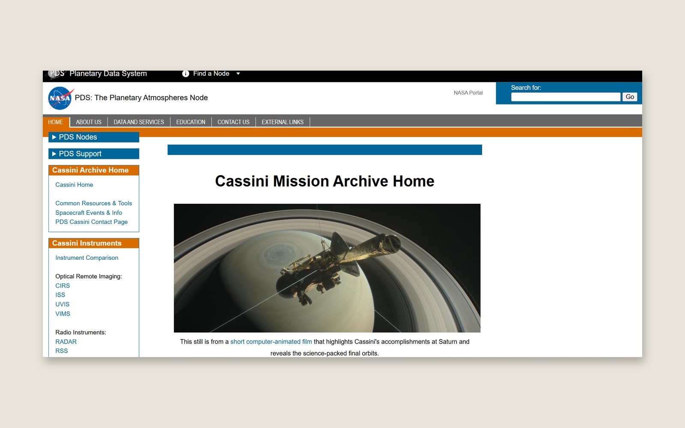
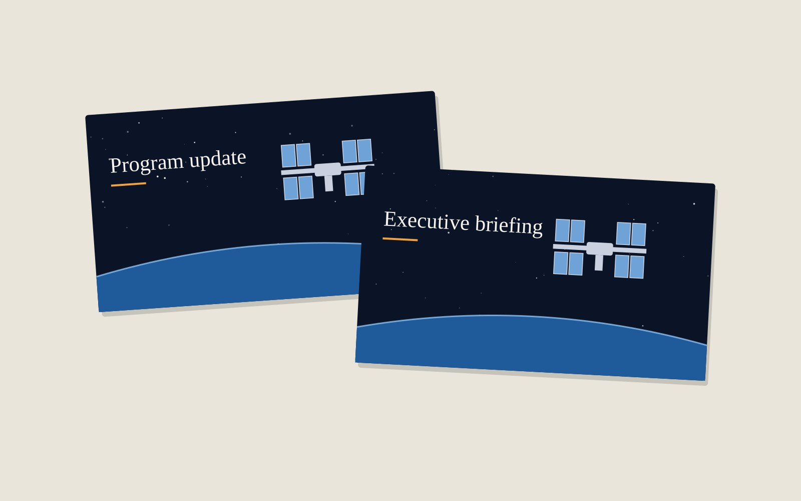

-
 Featured
Featured
NASA · Reports · Editorial · Design
OCSDO Year in Review 2024 and 2025
Flagship annual reports for NASA's Office of the Chief Science Data Officer.
-
 Featured
Featured
JPL · Presentations · Mission storytelling
JPL Earth Science Presentation Library
Mission and technology decks for JPL-managed Earth science missions, published for download.
-

FeaturedJPL · Planetary · Usability testing · Software design
Cassini Web Archive
Usability-tested the PDS Cassini Mission Archive pages and helped build and design the software for its event calendar.
-

ISS · Executive communications · Presentations
ISS Executive Briefings
Executive materials for the ISS Director in NASA's ISS and Commercial Space work. [Add one-line result]
No public link · confirm slides are cleared